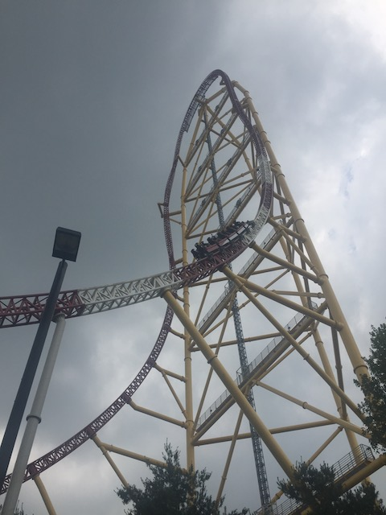
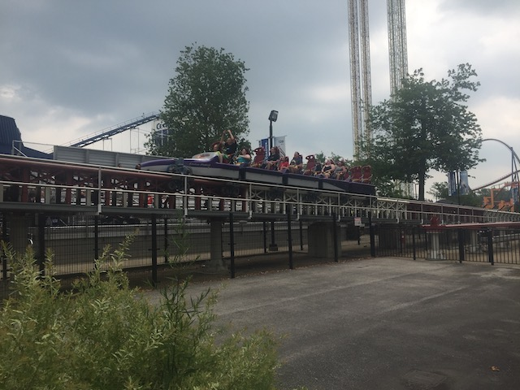
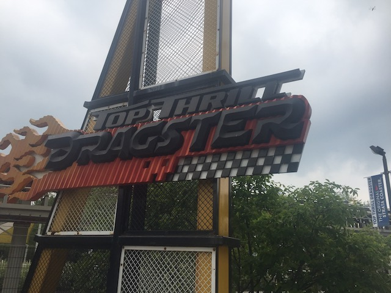
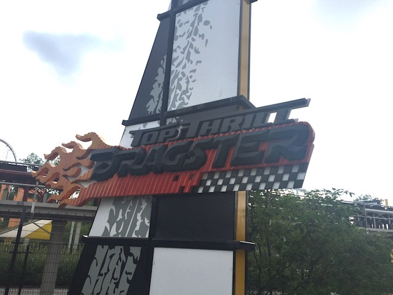
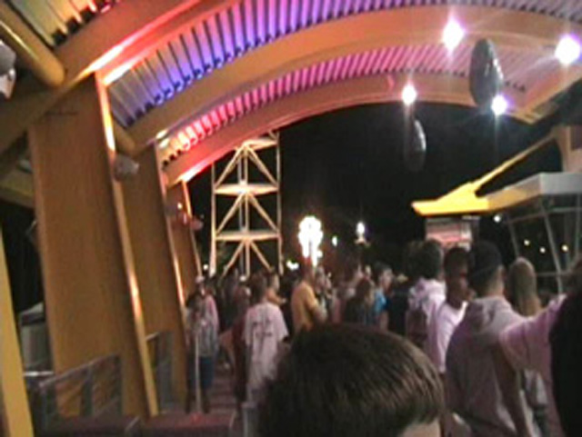
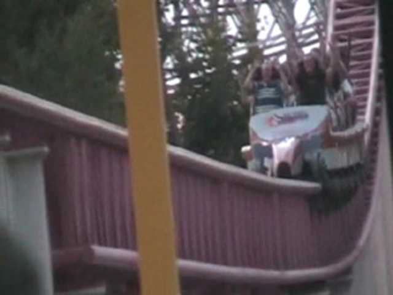
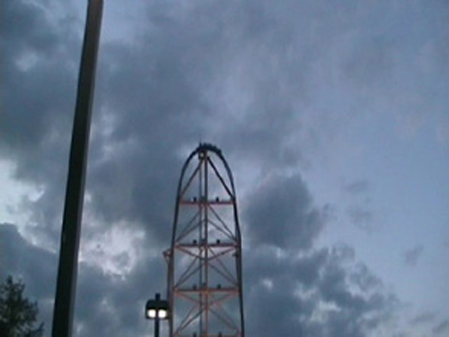
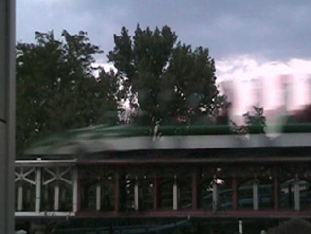

| |
Top Thrill 2 Review

We're here at Cedar Point. For today's attraction, we're reviewing Top Thrill 2. However, we last rode it as Top Thrill Dragster. So just keep that in mind. After getting in the seats and buckling the seatbelt, you wait for the operator to pull down your lap bar. Once they does that, you pull out into the launching area. You then roll up and stop. You can see the crowds staring at you and the giant christmas tree lights on the tower all light up. The anticipation does build up in you as you are just sitting there waiting there to launch. Then suddenly, you hear a voice that says "Arms Down." Then we hear this about a dozen times. But they're fools. Because once the ride launches, everybody just throws their hands up in the air (And I have photographic proof of that). Anyways, after waiting there, we keep sitting there waiting for the green. Once you see the green, you're flying. While it's not quite as insane as Xcelerator, it is still a REALLY DAMN GOOD LAUNCH!!! I can only imagine how it feels in the very front. However, there is only small problem I have with the launch (It's a major problem for Cody). Right before the car reaches the tower, the car slows down a little bit. Not by trims or anything like that, but rather just pure friction. Then you RISE up into the sky. And let me tell you, the view on Top Thrill Dragster is FANTASTIC!!! You get to look at all the cool rides at Cedar Point, as well as look out on Lake Erie. No, you can't see Canada, but it's still a great view. So much better than the crappy view on Kingda Ka (Plus, Top Thrill Dragster is just a much better ride overall). But then you get yanked out of your seat and thrown into a downward spiral 400 feet to the ground. Now this right here is my favorite part of the ride. The drop is fantastic. I personally love the airtime you get going into the spiral. Now you may not get airtime depending on the weight of the train and how fast you are going at the top, but I got airtime on both of my rides. After falling to the ground, we fly through a sign that says finish and into the brake runs. Our ride is now over. For a ride that's only 17 seconds long, I say it's a fantastic ride. Now it's not the "ZOMG!!! RIDE THIS NOW BECAUASE IT'S BIG, FAST, AND AT CEDAR POINT!!!" ride that Cedar Point Fanboys and the Discovory/Travel Channel will tell you. But you will get A TON of speed, maybe some airtime, and a lot of fun. I loved it as Top Thrill Dragster. And I'm really looking foreward to trying it as Top Thrill 2 when I return to Cedar Point. That vertical spike looks REALLY COOL!!! =)
8/10
Location: Cedar Point
Top Thrill Dragster opened in 2003
Top Thrill Dragster was transformed into Top Thrill 2 in 2024
Built by: Intamin/Zamperla
Last Ridden: June 20, 2021
Top Thrill Dragster Photos













Home
|